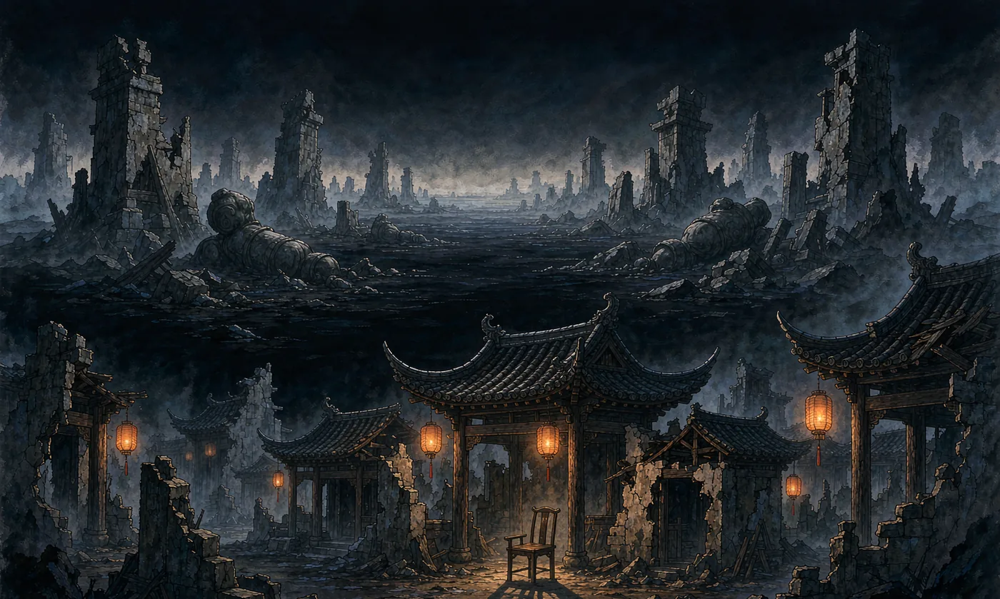
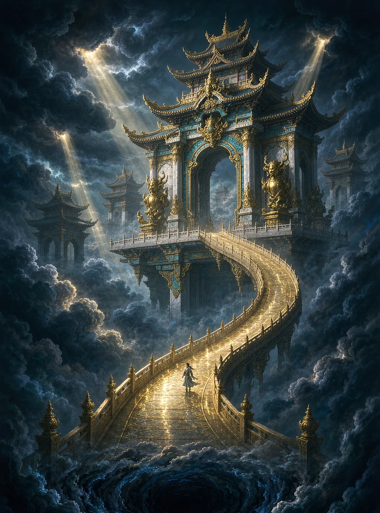
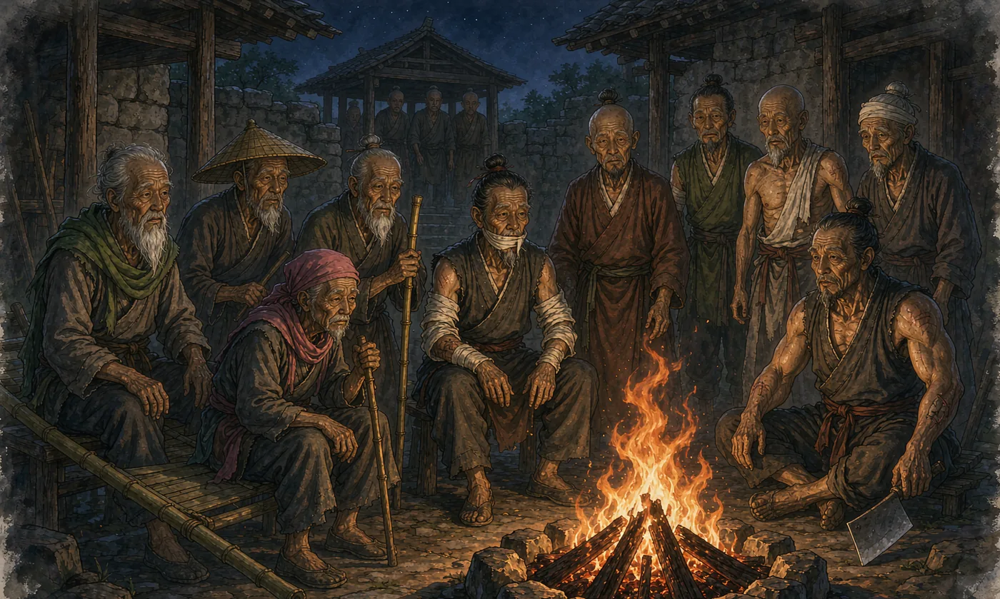
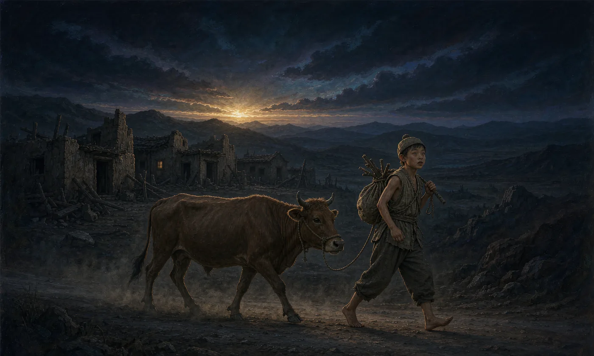
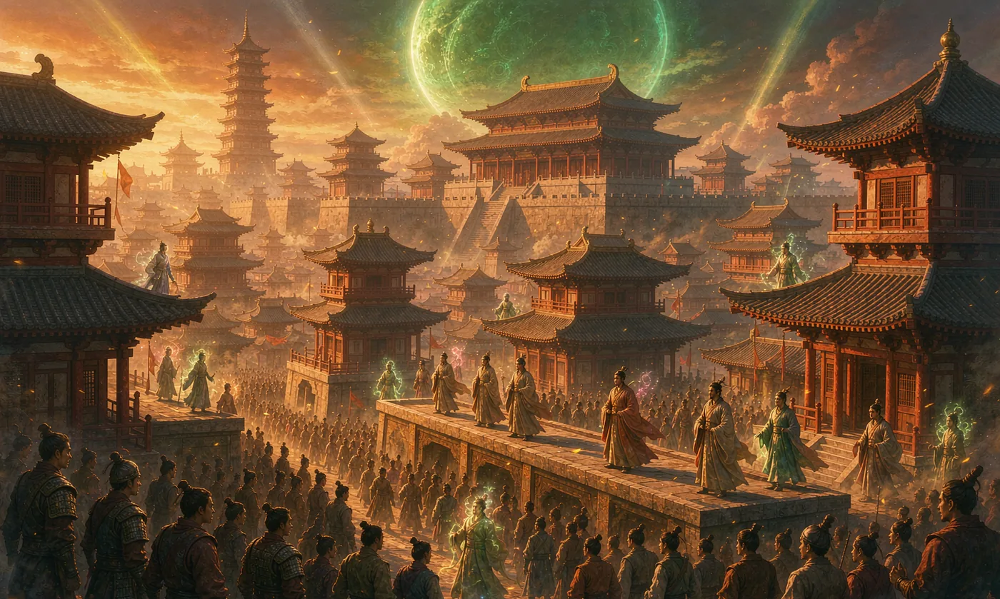

牧神记
起点中文网 · 2017.06 开更 — 2019.08 正文完结 · 全 1931 章 · 约 591 万字
一个被当成「霸体」养大的凡体少年
《牧神记》表面上是一个少年逆袭成神的故事，实际上写的是——凡人怎么把神从神坛上拽下来。整本书可以拆成三层，一层比一层大。
「你是天下第一霸体」
大墟残老村的九位残疾老人从江边捡回一个婴儿，取名秦牧。他本是凡体、无法修行，村长苏幕遮却骗他生来就是「举世无双的霸体」。秦牧信了，靠着这股信念把肉身练到极致，练出一身不讲道理的蛮力——全书最动人的一笔，是这谎言最后成了真的。
「神为人用，人命大于天」
走出大墟后，秦牧踏入延康国，与国师江白圭、延丰帝并称「延康变法三杰」。他们要修通被天庭斩断的神桥，让凡人也能成神——直接动了天庭垄断成神权的奶酪。这一段的写法更像政治改革剧：朝堂、军镇、宗门、神权，层层博弈。
宇宙是个被反复收割的果园
越往后越沉：龙汉、赤明、上皇、开皇……一个个覆灭的时代并非偶然，而是十天尊故意让宇宙轮回、收割每一世文明来维持自己永生。秦牧最终要对抗的不只是神，而是「轮回」本身。
一界三域，外加两个「不该存在」的地方
记不住全世界，记住这五个地方基本就能跟上剧情了。
元界
诸天万界的总称。大墟、延康国、开皇故地、赤明余部……都在这层。也是天庭眼里的「果园」——后天生灵（人族、妖族）在这里生灭。大墟是上古天庭覆灭后的巨大废墟，夜里魔神横行，是全书起点。
幽都
人死后由阴差带来的地方，主事者是古神土伯，掌生死簿与轮回大道。秦牧的身世之根就在这儿——他的半身兄长秦凤青是「幽都神子」，出生即凌霄战力。土伯在书中不是纯粹反派，而是秩序的执行者。
归墟
周期性引发「破灭劫」，威胁所有文明存亡。到书的末段，一切矛盾都汇聚于此：宇宙走向「终极冷寂」，这也是最后一卷的战场。
祖庭
万物起源之地，所有大道的源头。各大天尊、上古神魔争夺祖庭地盘，中期最核心的角斗场。秦牧在此占下十万大黑山为领地，最终又以封印祖庭为代价镇守三十五亿年。
弥罗宫
活过无数轮回的古老存在，前十六个宇宙纪的残留。它操控宇宙轮回、收割每一代文明的成果，把众生当试验棋子。全书最终 Boss，也是「为什么会有轮回」这个问题的答案。
五劫纪元：每一代人族，都在重演同一场失败
作者宅猪不是随手编的年代名。他化用了道教《上清宝诰》的「天地之数有五劫」：东方起自子曰龙汉，南方起自寅曰赤明，中央起自卯曰上皇，北方起自午曰开皇，西方起自酉终于戌曰延康。这套劫数模板，本身就是全书「轮回」主题的隐喻。
龙汉
黑暗压迫下的挣扎古神推举宇宙中第一位生命为天帝，成立龙汉天庭，名号即秩序，实际是奴役。为打破枷锁，御天尊为首的人族创立「七大神藏」成神法，却在瑶池盛会前遭暗杀。秦牧穿越回此时，代御天尊传下天宫成神法，创立天盟。
赤明
探索与发展的征程赤皇自元都废墟中崛起，建立赤明王朝，文明建立在「三头六臂」之上，约十万年历史。赤皇失踪后群雄逐鹿，后人明皇重建神朝。最终被火天尊代表的天庭所灭，余部逃入悬空界。此劫颠覆了半神对人族的血脉优势。
上皇
人命大于天地母元君扶持子嗣建立「北上皇天庭」，天盟扶持另一批人成立「南上皇天庭」，南北对峙近三十万年。南上皇的理念是「人命大于天，神为人服务」——这句话从此贯穿全书。地母被除，凌天尊遭袭杀，上皇终结。
开皇
后天大道的爆发秦天尊秦业在废墟上建开皇天庭。这是剑道、阵法、铸造、刀道等「后天大道」的巅峰期，开始与先天大道争辉。也是九老当年效力的时代——变法正当高潮，天庭势力从内部渗透，最终兵败。开皇打造「无忧乡」保全火种逃往彼岸，历时不足两万年。
延康
变革与崛起开皇劫中，一位道心崩溃的逃兵皇子在寻死路上遇见一群难民，被唤醒了责任感——他护着这些人找到一片可以繁衍的土地。这批人就是延康的火种。到延丰帝时，国师江白圭推行变法；秦牧登场后，变法终于推向了成功。
两条路：给神修的，和给人走的
牧神记的境界设定之所以值得单独说，是因为它有两个并行的体系——正统的「神藏天宫」体系和秦牧开创的革新体系。这个双轨结构本身就是全书的主题装置：谁掌握了成神法，谁就掌握了秩序。
正统体系 · 神藏天宫

不走天宫，在体内自成一界
秦牧干的事，本质上是绕开天庭的收费站——既然成神要过天庭的门，那就在自己身体里另开一条路。
· 用「天河神藏」替换原版的神桥神藏（御天尊则开辟了「星河神藏」）
· 一口气推演出「二十六种第七神藏」，把单一终点变成多条路
· 祖庭一路写到：祖庭灵胎 → 玄都大陆 → 周天星斗神圣 → 大轮回，目标是自我宇宙圆满，彻底跳脱天宫束缚
霸体三丹功
残老村村长传授，本质是一套「肉身成道」的导引功——与传统「炼气化神」的金丹路线相反，把肉身穿成丹炉，弱化对灵气的依赖，可以在奔跑、战斗中同步修炼。
「三丹」= 灵胎丹（眉心祖窍）→ 五曜丹（五脏承接星辰之力）→ 六合丹（四肢百骸共鸣）。功法初期是残缺的，靠秦牧自己补全推演，最后兼容了《大育天魔经》《雷音八式》《九龙帝王功》《祖龙太玄功》等多家体系，成为大一统功法。
「霸体不是体质，是一种心性」
秦牧的霸体是村长编的谎。但正因为信了，他才能在凡体资质下撑过三丹功每一步的极致痛苦。发现真相后他没崩，反而悟出这句话。
这是全书最重要的一个隐喻：信念本身可以造出真实。霸体谎言最终变成了真的霸体，而「信则有」也正是延康变法能成的底层逻辑——先让人相信凡人可以成神，然后他们真的成了。
残老村九老：大墟版「恶人谷」，九个残废的绝顶强者
动画最出彩的群像。九个身体残缺的老人，个个都曾是搅动风云的人物，因为反神权被打残、被逼隐居。他们把自己一生的绝学和遗憾，毫无保留地塞给了捡来的那个孩子。

苏幕遮
- 身份
- 残老村村长 · 上代人皇 · 剑道巅峰，剑法名「剑图」，残老村第一高手
- 残缺
- 四肢被上苍真神斩断，常年坐在担架上
- 教了秦牧什么
- 「人可胜天」的信念与人皇剑道；后来还指引延康国师入道
司幼幽
- 身份
- 人称司婆婆 · 天圣教（天魔教）前代圣女 · 白虎灵体，美到祸国殃民
- 残缺
- 化身驼背老妪，藏在老婆婆的皮囊里四十年
- 教了秦牧什么
- 《大育天魔经》《大罗天星掌》，秦牧的魔道引路人
瞎子
- 身份
- 一代枪神，一杆枪可挑动满江水
- 残缺
- 神级双目被星犴挖去，道心受创而隐居
- 教了秦牧什么
- 以气御枪、心神眼、天衍推演之术；最疼秦牧的一个
瘸子
- 身份
- 天下第一神偷，偷道始祖
- 残缺
- 偷了延康国镇国玉碟，被国师斩断一条腿
- 教了秦牧什么
- 偷天腿法、破解封印与极速遁术；是他带秦牧走出了大墟
药师
- 身份
- 人称「玉面毒王」，医毒双绝，毒术可弑神
- 残缺
- 因弟子背叛（一说躲避情债）自毁容貌隐居
- 教了秦牧什么
- 丹道、毒道、肉身秘藏；以药入道，代表用「诡道」对抗强权
马爷
- 身份
- 大雷音寺如来座下弟子
- 残缺
- 因破戒成家遭师门追杀，自断一臂
- 教了秦牧什么
- 佛门功法与肉身搏杀，佛魔一体
聋子
- 身份
- 天图国太子，画道入圣
- 残缺
- 沉迷作画致母国覆灭，自割双耳
- 教了秦牧什么
- 画道。曾以百姓血绘《十八层地狱图》葬敌百万，画作可化虚为实
哑巴
- 身份
- 开皇时代天工造物一脉最后传人，朱雀灵体，实力仅次于村长
- 残缺
- 因泄露天工机密致族人被害，自割舌头赎罪
- 教了秦牧什么
- 炼器、机关、傀儡、城防阵法；延康军械与大阵的源头
屠夫
- 身份
- 「天刀」大宗师，曾向诸神挥刀
- 残缺
- 因弑神被腰斩，只剩上半身（后由秦牧寻回残躯）
- 教了秦牧什么
- 杀猪刀法，刀意霸道，能切出火焰
秦牧是谁：一具身体里塞了四重身世
这是全书最大的悬念工程。秦牧的身份是一层层剥开的，每一层都重新解释了前面的剧情——所以看他「原来是这样」，是读这本书的主要乐趣之一。
凡体孤儿 · 残老村的「霸体」
从江边捡回的孩子，本无修行资质。村长的谎言给了他信念，也给了他全村的绝学。
幽都神子的「第二意识」
幽都神子秦凤青因作恶多端被土伯封印，其体内孕育出了第二个意识——就是秦牧。两人原本共用一具身体、一个元神。
开皇血脉 · 第三十七代人皇
机缘巧合遇见生父，揭开帝族遗孤身份——他是开皇第一百零七世孙。身份到手的同时，也拿到了成神法门。
弥罗宫七公子说法不一
最深的一层，与「为什么是他」直接相关。百度百科的表述是：秦凤青同时也是弥罗宫主人的黑暗面分身「弥罗宫七公子」；另有资料称秦牧是弥罗宫七公子转世。两说并不完全一致，此处如实并列。

其他关键称呼与关系
· 别称：牧天尊、万古不灭大法师、天魔教（天圣教）教主、延康国师、人皇
· 神器：劫剑（断剑）、杀生鼎、太帝印
· 妻子：灵毓秀，延康七公主，女扮男装进大墟时被秦牧戏称「肥七公子」。延丰帝入狱后她登基为延秀帝，幽都之战后退位成婚，育有一女秦灵筠
· 轮回知己：白璩儿（龙族，跨纪元的旧缘，无世俗名分）
· 半身兄弟：秦凤青——一个大头娃娃，幽都神子，实力恐怖但只有孩童心性，看世界只有「能吃的」和「不能吃的」两类。后期继承土伯的生死簿与幽都大道
剧情骨架
把 1931 章压成六幕。看动画追到哪一幕，心里就有数了。

第一幕大墟 · 谎言中的霸体
残老村九老捡回秦牧，村长骗他是霸体。他练霸体三丹功，肉身强到不像话。黑暗笼罩大墟的那一夜，他走出家门——故事从这里开始。走出大墟后才知道自己是凡体，但战力早已逆天。
第二幕延康 · 变法三杰
秦牧成为天魔教教主，打遍黄金圣宫无敌手，又被封为延康第一任太学博士。他与国师江白圭、延丰帝并称「延康变法三杰」，核心纲领是神为人用，要修通被斩断的神桥，让凡人也能成神。他助国师平叛、造射日神炮，得人皇传承成为新一代人皇。
第三幕延康劫 · 天庭的镇压
天庭判定延康是叛逆，发动延康劫。第一次延康劫，国师与延丰帝双双入狱，只有秦牧借「牧天尊」的身份保下了延康国——延康转为明面上听天庭的、暗地里继续变法。第二次延康劫后，天庭反被延康所灭，延丰帝建立新天庭。
第四幕身世 · 三重谜底
幽都神子、开皇血脉、弥罗宫七公子——身份一层层揭开，同时把前三幕的「偶然」全部改写成「必然」。秦牧由此得到成神法门，正式开启道法神通改革的大世。
第五幕祖庭 · 十天尊博弈
进入宇宙中心的祖庭，占下十万大黑山为领地，与各大天尊斗智斗勇。天庭诸神并非单纯邪恶，而是既得利益者的复杂化身。秦牧在此集齐大道、创立完整新法，联合土伯、天公、开皇、造物主及各族反抗者，与十天尊全面开战。
第六幕混沌长河 · 终结轮回
真正的对手浮出水面：弥罗宫。它要的不是统治，而是让宇宙彻底寂灭、不再轮回。秦牧跨越多个宇宙纪元，在混沌中悟道，面见元始大天尊江子川获得破局关键。最终他牺牲一切回到宇宙起点，重开天地，开创非轮回式宇宙——众生平等，再无高高在上的神。
它为什么比普通玄幻高一档
打怪升级的书满地都是。牧神记真正立住的地方，是它把一整套政治哲学塞进了玄幻壳子里。
神为人用，人命大于天
全书纲领。上皇时代南上皇天庭最先提出，延康变法把它付诸实践。神不是主人，神应该为人所用——反过来就是：人不需要跪着活。
变革才是永恒
批判古神与天庭代表的「永恒统治」。通过龙汉九天尊的兴衰，揭示权力更迭的必然与悲剧性：任何宣称永恒的秩序，最后都会变成压迫。
凡人弑神
神灵被赋予贪婪、恐惧、私欲这些人性弱点；凡人反倒通过抗争彰显出神性。这直接颠覆了传统玄幻「神魔对立」的框架。
被牧者 → 牧神者
书名最狠的一层反转。秦牧一生都在被安排、被牧养；他最后的成就是成为「牧神的人」。被牧者翻身去牧神，这是全书的人物弧光。
信念造出真实
霸体是谎，但信了就成真。延康变法也是一样——先让人相信凡人可以成神，然后他们真的成了。这是宅猪对「信念」最浪漫的表态。
时空闭环与宿命
「物质不易」神通（凌天尊开创，可冻结时空因果链）让秦牧能回溯历史，并尝试解构外祖母悖论。全书用非线性的 LOOP 结构，把百万年历史压缩进一个人的成长线里。
好在哪，坑在哪
这本书口碑很高，但不是没有毛病。老书虫骂的点也很具体。
优点
- 群像塑造极其出色，残老村九老、延康朝堂、历代天尊都立得住
- 思想性高于同类，把变法改革、阶级固化、技术革命这些议题写进了玄幻
- 时空闭环的叙事结构，百万年历史与个人成长线互相嵌套，草蛇灰线伏笔密集
- 文风融合金庸的江湖气与古龙的悬疑感，战斗场面有画面感
- 豆瓣动画评分长期稳在 9 分上下，原著作者宅猪公开认可改编
争议
- 后期力量体系膨胀严重，「境界」越写越多，数值感变弱
- 部分关键角色的成长依赖「机械降神」，运气成分偏多
- 结局收束偏仓促——作者自述受身体与精力限制，未能按原计划扩展到千章
- 世界观名词密集，前中期阅读门槛不低，容易劝退
获奖记录
2018 年入选全国网络文学重点园地工作联席会议年度重点作品扶持选题；2019 年入选第四届橙瓜网络文学奖百强作品、最具潜力十大动漫 IP；2020 年获第二届泛华文网络文学「金键盘」奖玄幻仙侠类奖项。
改编版图
2019 年改编为同名漫画；2022 年 2 月由安徽文艺出版社出版实体书；2023 年宣布动画化，2024 年 10 月正式播出。另有消息称实体书首版曾因出版社要求修改「瞎子」「聋子」等称呼、删改关键情节，宅猪不满而终止合作另寻出版社。
在宅猪作品里的位置
普遍被认为是宅猪的巅峰之作。它把网文的「爽感」和严肃文学的思辨性做了结合——虽然节奏和设定严谨性上有瑕疵，但完成度与野心在同期作品里少见。
动画现在演到哪了
先给你一句实话：你追的这个坑，按目前速度还得追好几年。全 1931 章的原著，现在动画才走到延康变法这一段——作者本人在书里也才把这个当开胃菜。
截至 2026 年 9 月 · 更新至第 97 集
B 站独播 · 玄机科技 + bilibili 联合出品 · 3D 年番 · 每周一集，全年不断更
关于催更：粉丝一直在喊「一周两集」或「加长单集」，官方目前没有松口，仍保持每周一集。此前有过临时加长单集的先例，播出后口碑很好。理性看，3D 年番的建模、渲染、动捕、剧本都要时间，提速最容易翻车的是打戏质量。
要不要提前看原著？
如果你最想知道的是「后面到底怎么打上天庭的」，那动画确实太慢——延康变法在原著的比重约等于序章。想不被剧透又不想等，建议从原著延康劫那一段开始补，这段是全书公认的高光，也是动画即将进入的区域。
也可以攒着看
年番模式一周一集的节奏，攒三到五集一次看，体感和周更完全不同。另外动画有「年番」分季结构（年番 1 于 2024 年 10 月开播），季与季之间会有间隔，提前有心理准备比较好。
哪些地方说法不一致
这份梳理是从公开资料交叉整理出来的。网上的《牧神记》设定整理里混了大量 AI 生成内容，错误率不低，所以我把自己识别出的冲突点全部列出来，供你判断。
这些可以放心
作者宅猪、2017 年 6 月开更、1931 章、约 591 万字、残老村九老名单与各自身份、七大神藏＋天宫七境的境界名目、五劫纪元的名称与对应关系、延康变法三杰、动画更新至第 97 集与 700 万追番／20 亿播放的数据。
这些别当定论
① 完结时间：正文标注 2019 年 8 月完结，但书站显示 2022 年 11 月仍有新番外更新；
② 动画集数与首播时间：有资料称 2024 年 10 月 27 日首播、第一季共 104 集，另有资料称 2023 年宣布播出，实际集数以 B 站页面为准；
③ 九老结局的两种说法（牺牲化为大罗天／被复活恢复正常）；
④ 弥罗宫七公子的身份表述（秦凤青分身说 vs 秦牧转世说）；
⑤ 司婆婆所属教派，有写天魔教、有写天圣教。